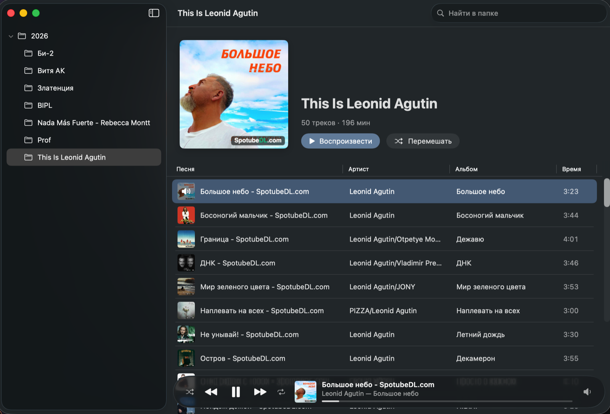

Siply
Лёгкий музыкальный плеер для macOS, который играет прямо из папок. Открыл папку — слушаешь, без импорта и медиатеки. Siply — сокращение от Simple Player.
Скачать для macOS
Что умеет
Папки вместо медиатеки
Слева дерево папок, справа треки выбранной папки. Ничего не импортируется и не индексируется.
Родные форматы
MP3, AAC/M4A, FLAC, WAV, AIFF и CAF — всё, что играет macOS, включая lossless.
Теги и обложки
Названия, артисты, альбомы и обложки из тегов. Старые ID3 в Windows-1251 читаются кириллицей.
Как в Apple Music
Шапка альбома с кнопками «Воспроизвести» и «Перемешать», таблица треков, панель плеера с Liquid Glass.
Своё устройство вывода
Музыка — в Bluetooth-колонку, системные звуки — на динамики Mac. Колонка отключилась — играет дальше и вернётся на неё сама.
Клавиатура и медиаклавиши
Пробел — пауза, Enter — играть трек. Работают медиаклавиши и Пункт управления.
Маленький и нативный
Swift, SwiftUI и AVFoundation. Ни одной сторонней зависимости.
Установка
- Скачайте
Siply-x.y.z.dmgв релизах на GitHub. - Откройте образ и перетащите Siply в «Программы».
- Запустите Siply и выберите папку с музыкой.